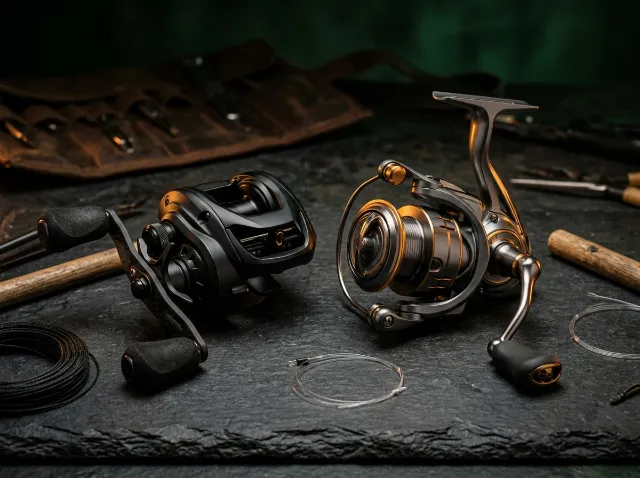

-28% ILUSTRATIVO🎣 OLHA ESSA OPORTUNIDADE! • EXEMPLO ILUSTRATIVO
Conjunto Carretilha Perfil Baixo 8.1:1 + Molinete Grafite — Modelo Fictício
Preço anterior fictício
R$ 480,00
Valor promocional ilustrativo
R$ 345,60
28% OFF fictício